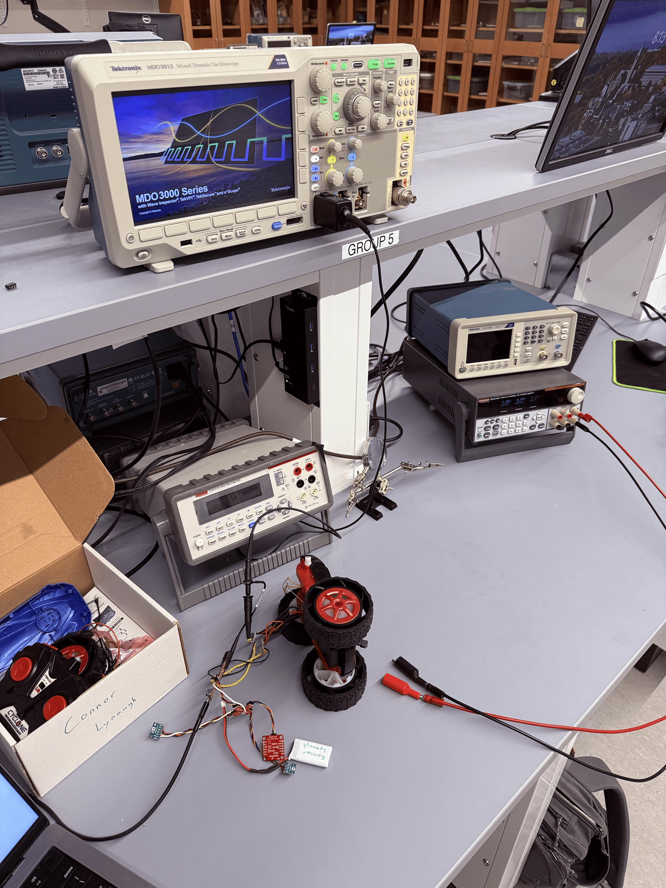
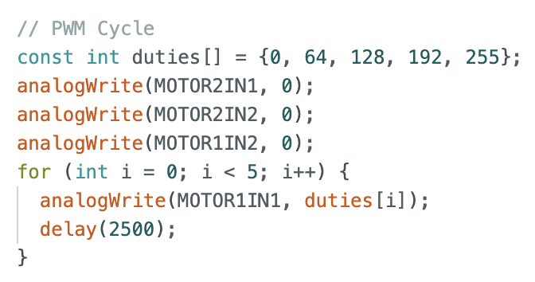
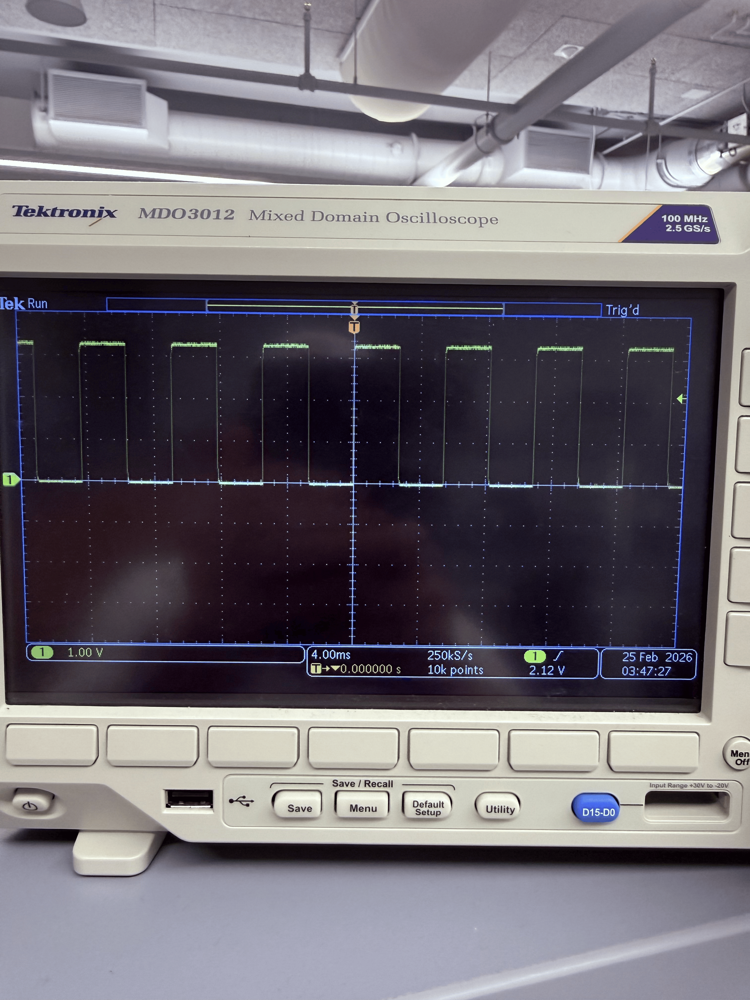
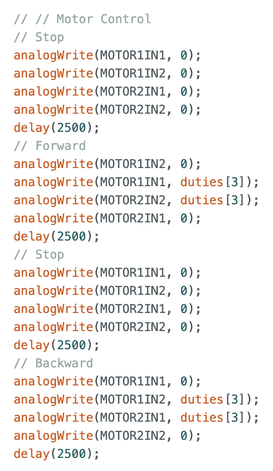
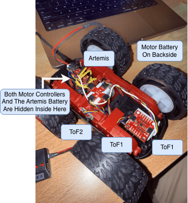
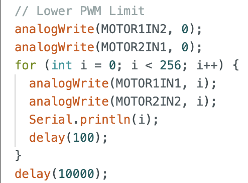
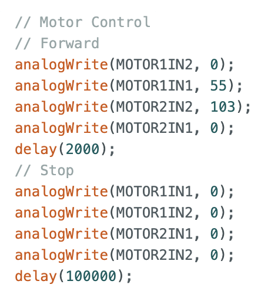
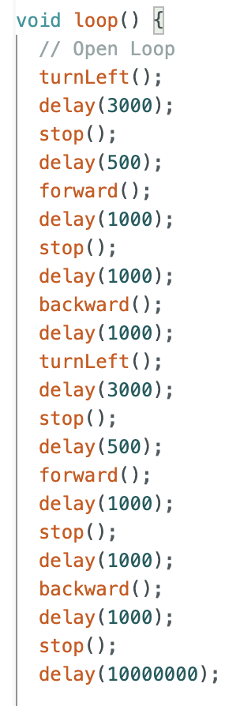
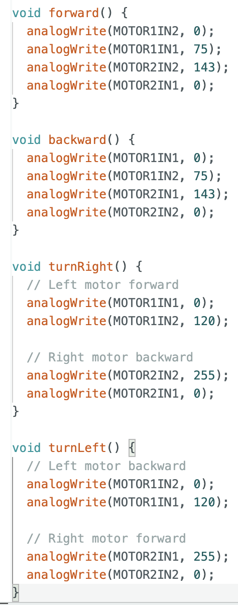

Lab 4: Motors and Open Loop Control
ECE4160 Fast Robotics — Spring 2026
Connor Lynaugh
Objective
The goal of this lab was to convert my car from manual to open loop control. After this lab the car can execute pre-programmed movement sequences using the Artemis Nano and two dual motor driver boards.
Prelab

I wired my motor circuitry as shown above. Four adjacent PWM pins (13–16) on the unused side of the Artemis Nano were selected for motor control. All grounds were tied together to prevent unnecessary ground islands or loops.
The A and B inputs and outputs of each dual motor driver were shorted together to increase available output current. The Artemis Nano and motors were powered using two separate 850mAh batteries. This isolation prevents motor current transients from sagging the logic rail and resetting the microcontroller.
Lab Tasks

I first tested a single dual motor driver with both sets of inputs and outputs wired in parallel. The motors were initially powered from a bench supply set to 3.7V with a current limit enabled to prevent shorts.

An oscilloscope was connected to verify the PWM waveform generated using analogWrite(). To drive forward motion, one input was modulated while the complementary input was held low.

After verifying proper operation with one controller, I integrated the second motor driver to support independent left and right motor control. Backward motion was achieved by reversing which input was PWM-driven.

After switching from bench supply to battery power, the full system operated reliably without resets.

PWM Calibration

Through testing I determined:
- ~77/255 (~30%) duty cycle initiates forward motion
- ~119/255 (~47%) duty cycle initiates turning in place
Lower duty cycles are sufficient once wheels are already in motion.
Straight Line Motion

Using calibrated PWM values I was able to reliably drive the car forward in a straight line under open loop control.
Open Loop Movement Functions


The final program executes a fully open loop movement routine consisting of forward motion, turns, and stops without feedback correction.
Acknowledgements
I worked with the TAs to execute this lab smoothly.